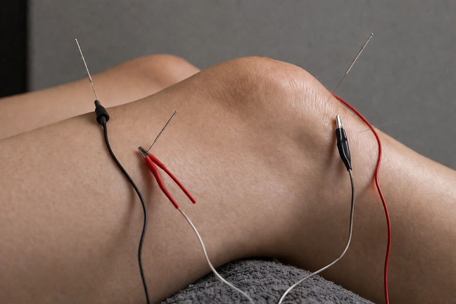
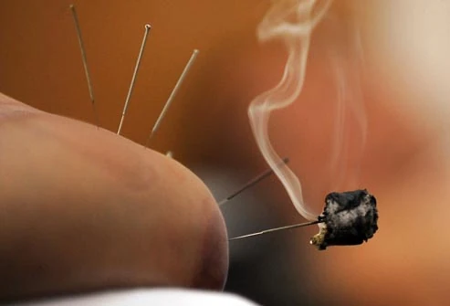

Complementary Treatments
More tools for deeper healing
Alongside traditional acupuncture, Shaul uses a range of complementary modalities that deepen and extend the treatment — chosen specifically for what your body needs.

Cupping Therapy
Cupping creates gentle suction on the skin using glass or silicone cups. Rather than pressing into the muscle — like massage — cupping lifts the tissue, creating space for blood flow, releasing tight fascia, and encouraging the body to let go of held tension in a way that can feel immediately relieving.
It is particularly effective for back pain, neck and shoulder tension, post-exercise soreness, respiratory congestion, and the early stages of a cold or flu. The familiar circular marks it leaves are painless and fade within a few days — a sign that circulation has been drawn to the area.
Many people find cupping deeply satisfying. It has a way of releasing tension that has been held for a very long time.

Electro-Acupuncture
Electro-acupuncture follows the same principles as traditional needling — the same points, the same approach — but adds a gentle electrical current between pairs of needles via small clips. The frequency and intensity are carefully adjusted to suit each person and condition.
According to Chinese Medicine, illness can arise when qi — the body's vital energy — accumulates or stagnates. Electro-acupuncture is particularly effective for conditions where that stagnation is stubborn or deep-seated: chronic pain, musculoskeletal conditions, neurological conditions, and cases where traditional needling alone hasn't quite reached the pattern.
Most people experience it as a gentle pulsing or tingling sensation — unusual at first, but quickly becoming something many find oddly relaxing.

Moxibustion (Moxa)
Moxibustion uses the dried herb mugwort — known as moxa — burned either on the end of a needle or held near the skin over specific acupuncture points. It produces a gentle, penetrating warmth that is quite distinct from surface heat: most people describe it as deeply comforting.
Moxa has particular warming and tonifying qualities in Chinese Medicine. It is used when the body needs building up — when there is a sense of coldness, depletion, or deficiency. It is commonly used for digestive conditions, certain types of fatigue, menstrual complaints, and to support breech presentation in late pregnancy (a well-researched application).
It has a distinctive earthy smell. Some people love it immediately. It's one of those treatments that tends to feel like something ancient and real.
"..."
— ABC, Pinelands